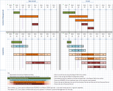

Outcome measures
Outcome measures enable the user to generate reports that show the impact of a decision some period of time after the decision was made. These reports measure outcomes over a specified time period, for both Acquisition and Customer Management reports.
Outcome measures are designed to assess the impact of decisions, based on data that is collected some time after the decision is made. One of the most common examples is bad rates. At the point of acquisition, limited information is available, off which the decision to lend must be made. It may only be a year or more later that the impact of this decision can be observed properly.
Accurate calculation of bad rates and the like also require careful handling of account lifecycle events (i.e. account opening, closings and write-offs), to ensure that the figures are not skewed.
The following is an example from a report using an outcome measure that tracks credit card utilisation over the 3 month period following the opening of an account:
{kind=link}
Here, the percentage of credit card use is calculated for each score band.
Outcome measures work with both Acquisition and Customer Management reports; however, they work somewhat differently.
The outcome measure needs to know the interval between the decision and the observation.
To start with, the analysis period is used to filter the records (applications, accounts, etc.) in the report. The report is filtered based on decisions made in a particular date range. The analysis period is set in the same manner for both Customer Management and Acquisition reports.
For Acquisitions, the decision we are filtering for is the (Acquisition) system decision. For Customer Management, we are filtering for whatever decisions were made when the customer/account was processed (which happens repeatedly, in a batch process).
Outcome measures introduce another step: For the set of records (“entities”) that meet the analysis period filter, we need to obtain some additional data (which will be counted, or summed, etc.). For each of these entities, we want to know what happened—three months after the decision, in our example. This is where the outcome period becomes relevant.
In Customer Management, the assumption is that a batch process occurs on a regular basis—e.g. monthly—and reflects a recurring account/customer management batch process schedule, for example. Except for trend reports, the analysis period is the same as the Customer Management Run Period (CMRP), which is set in the Report Configuration. Again, in our example, this is a one-month period. For a trend report, the analysis period can be a multiple of the CMRP, as each interval is (logically) separate.
| The CMRP reflects the frequency with which each customer/account is updated. The portfolio can still be broken down and updated in batches; for example if a user decisions 25% of their portfolio in the first 4 weeks in every month, the update frequency is still monthly. |
For both Customer Management and Acquisition reports, in a trend report the Analysis Period is defined as being some number of consecutive trend periods.
In Acquisition reports, in each trend period a certain number of applications were decisioned (i.e. the system decision for those applications was made). Those applications are the ones whose information will be reflected in the row or column for that trend period. As any one application only has a single system decision, each application can only appear in one trend period. So the figures in a given trend period show the “incremental” applications for that trend period.
In Customer Management reports, customers (for example) are processed every single month. So, in a trend report the same customer could appear in every single period. Effectively, the figures shown in EACH trend period reflect the entire portfolio, so the trend report is showing the changes to the entire portfolio.
In the following example, we have two customers, X and Y, who both apply for a credit card:
{kind=link}
The green line represents the analysis period, running from mid-January to mid-February.
For both X and Y, the system decision is made in January; however, for X the account is opened in January, while for Y the account is opened in February. So in the following diagram, X and Y represent the opening dates, irrespective of the decision dates:
{kind=link}
In Acquisitions, the analysis period is set with respect to the system decision date. In our example, both X and Y fall within the 30-day analysis period, as set in the Report Definition:
{kind=link}
The account open dates for both X and Y are used to determine the 3-month outcome period for each customer account; thus the outcome period is determined for each account independently:
{kind=link}
In Customer Management reports, the analysis period and the CMRP are the same (except for trend reports, as noted above). For example, A and B have both been opened, and are processed and decisioned in a January batch customer management run. Their January updates would both fall into the same analysis period. Any outcome measures would be evaluated relative to this January decision.
{kind=link}
The outcome period end date is established by the Reporting Parameters on the Measure editor; this end date is used as an additional filter used by the various outcome measures: Outcome-Open, Outcome-Closed, etc. (see the Outcome behaviours table for details).
Once an account has been closed or written-off (and this information included on one final update), the account no longer needs to be updated in the mart.
Outcome measure parameters are set in the Measure editor:
{kind=link}
Outcome type - options include the following:
{kind=link}
This table describes the behaviours and dependencies of the outcome measure filters selected in the Reporting Parameters. Outcome measures may behave differently in the context of Acquisition and Customer Management reports.
|
Acquisition |
Customer Management |
|
| Outcome general behaviour |
Analysis Period is set with respect to the System Decision Date. |
Analysis Period is set with respect to (entity) Record Date. |
|
Outcome length is set with respect to the Account Open Date. Thus, it is processed separately for each account. |
Outcome length is set with respect to the Record Date. It would be shared by all accounts (entities). |
|
| Outcome | Measure and measure filter values are taken from the outcome update (only updates in the strict outcome period will be used between the outcome period start date and the outcome period end date). | |
| Outcome - Open | Filters entities to those that were NOT closed OR written off on/before the Outcome Period End Date. Measure and Measure Filter values would be returned from the most recent update between the Analysis Period End Date (exclusive) and the Outcome Period End Date (inclusive). | |
| Outcome - Closed | Filters entities to those that were closed on or before the Outcome Period End Date. | |
| Outcome - Written off | Filters entities to those that were written off on or before the Outcome Period End Date. | |
| Outcome - Insufficient Outcome |
Filters entities to those whose Outcome Period does not exist in the database (i.e., the Outcome Period is "newer" than the latest update to the database). This is checked using the CM Run Period – if the outcome time period is later than the last updated time period then the account will have insufficient outcome. - Only COUNT measures are supported. |
Not supported |
|
Outcome - Closed (Sufficient Outcome) |
Filters entities to those that were closed on or before the Outcome Period End Date AND DID NOT have insufficient outcome. |
|
|
Outcome - Written off (Sufficient Outcome) |
Filters entities to those that were written off on or before the Outcome Period End Date AND DID NOT have insufficient outcome. |
|
Outcome length - Establishes the outcome period end date, in units of time (time intervals) defined by the "Customer Management Run Period" of the Report Configuration. In principle, the outcome length is always with respect to the decision date. For Customer Management, the record date is used (as customer management decisions might be made during any batch process of those customers/accounts). For Acquisition reports, in theory the system decision date should be used. However, as there is often a gap between the system decision and the account being opened (and, consequently, there is no chance for the account to "behave" in that lull), the account opening date is used instead.

{kind=link}